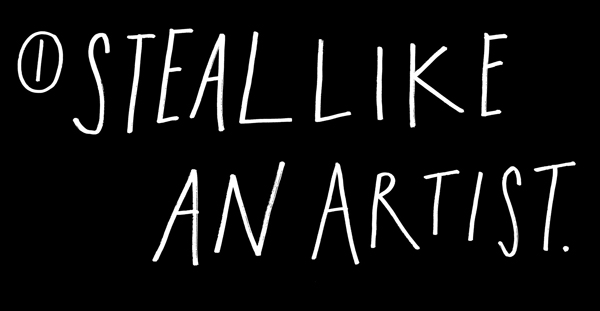
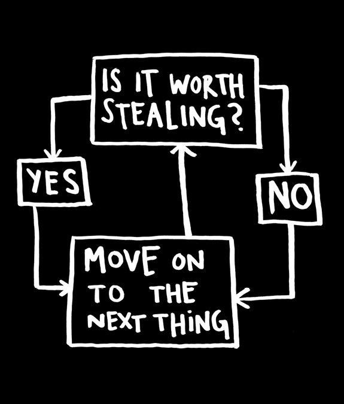
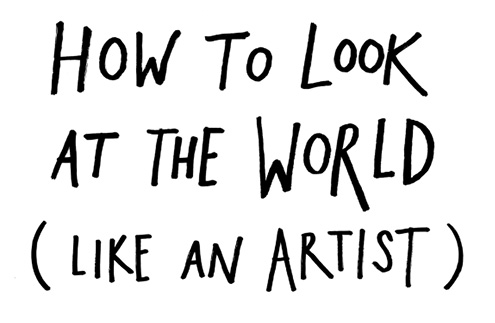
Every artist gets asked the question,
“Where do you get your ideas?”
The honest artist answers,
“I steal them.”
How does an artist look at the world?
First, you figure out what’s worth stealing, then you move on to the next thing.
That’s about all there is to it.
When you look at the world this way, you stop worrying about what’s “good” and what’s “bad”—there’s only stuff worth stealing, and stuff that’s not worth stealing.
Everything is up for grabs. If you don’t find something worth stealing today, you might find it worth stealing tomorrow or a month or a year from now.
“The only art I’ll ever study is stuff that I can steal from.”
—David Bowie
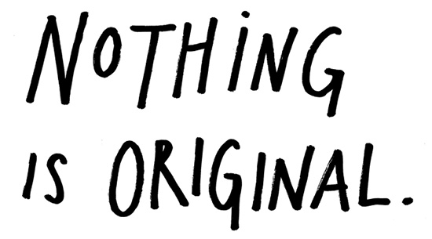
The writer Jonathan Lethem has said that when people call something “original,” nine out of ten times they just don’t know the references or the original sources involved.
What a good artist understands is that nothing comes from nowhere. All creative work builds on what came before. Nothing is completely original.
It’s right there in the Bible: “There is nothing new under the sun.” (Ecclesiastes 1:9)
Some people find this idea depressing, but it fills me with hope. As the French writer André Gide put it, “Everything that needs to be said has already been said. But, since no one was listening, everything must be said again.”
If we’re free from the burden of trying to be completely original, we can stop trying to make something out of nothing, and we can embrace influence instead of running away from it.
“What is originality? Undetected plagiarism.”
—William Ralph Inge
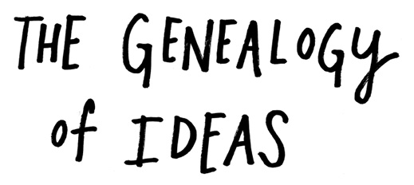
Every new idea is just a mashup or a remix of one or more previous ideas.
Here’s a trick they teach you in art school. Draw two parallel lines on a piece of paper:
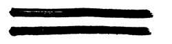
How many lines are there?
There’s the first line, the second line, but then there’s a line of negative space that runs between them.
See it? 1 + 1 = 3.
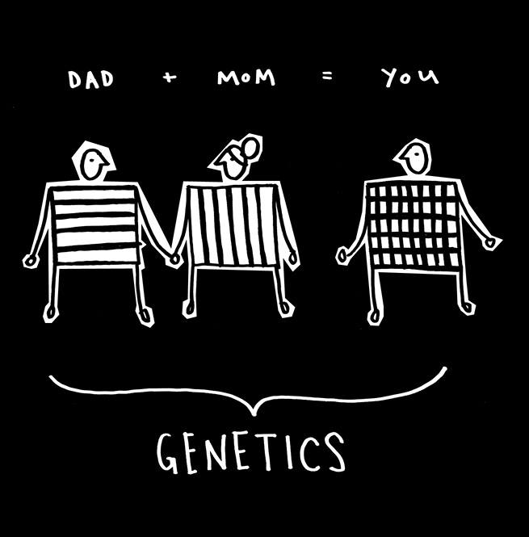
A good example is genetics. You have a mother and you have a father. You possess features from both of them, but the sum of you is bigger than their parts. You’re a remix of your mom and dad and all of your ancestors.
Just as you have a familial genealogy, you also have a genealogy of ideas. You don’t get to pick your family, but you can pick your teachers and you can pick your friends and you can pick the music you listen to and you can pick the books you read and you can pick the movies you see.
You are, in fact, a mashup of what you choose to let into your life. You are the sum of your influences. The German writer Goethe said, “We are shaped and fashioned by what we love.”
“We were kids without fathers . . . so we found our fathers on wax and on the streets and in history. We got to pick and choose the ancestors who would inspire the world we were going to make for ourselves.”
—Jay-Z
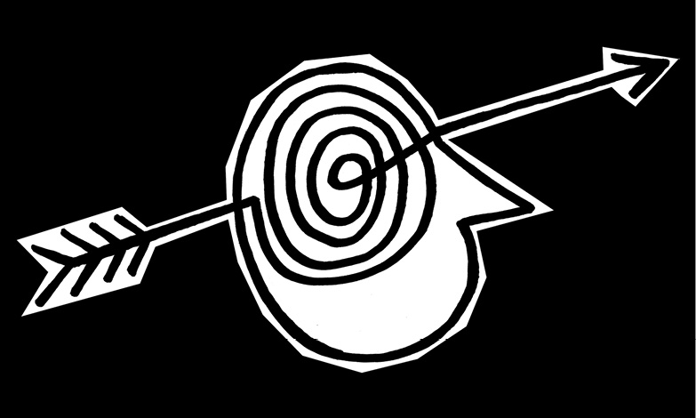
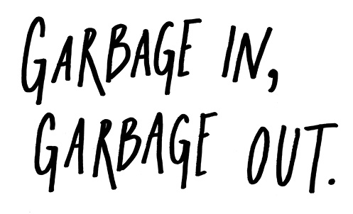
The artist is a collector. Not a hoarder, mind you, there’s a difference: Hoarders collect indiscriminately, artists collect selectively. They only collect things that they really love.
There’s an economic theory out there that if you take the incomes of your five closest friends and average them, the resulting number will be pretty close to your own income.
I think the same thing is true of our idea incomes. You’re only going to be as good as the stuff you surround yourself with. My mom used to say to me, “Garbage in, garbage out.” It used to drive me nuts. But now I know what she meant.
Your job is to collect good ideas. The more good ideas you collect, the more you can choose from to be influenced by.
“Steal from anywhere that resonates with inspiration or fuels your imagination. Devour old films, new films, music, books, paintings, photographs, poems, dreams, random conversations, architecture, bridges, street signs, trees, clouds, bodies of water, light and shadows. Select only things to steal from that speak directly to your soul. If you do this, your work (and theft) will be authentic.”
—Jim Jarmusch
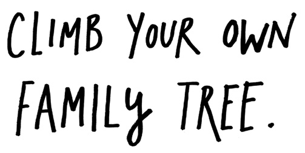
Marcel Duchamp said, “I don’t believe in art. I believe in artists.” This is actually a pretty good method for studying—if you try to devour the history of your discipline all at once, you’ll choke.
Instead, chew on one thinker—writer, artist, activist, role model—you really love. Study everything there is to know about that thinker. Then find three people that thinker loved, and find out everything about them. Repeat this as many times as you can. Climb up the tree as far as you can go. Once you build your tree, it’s time to start your own branch.
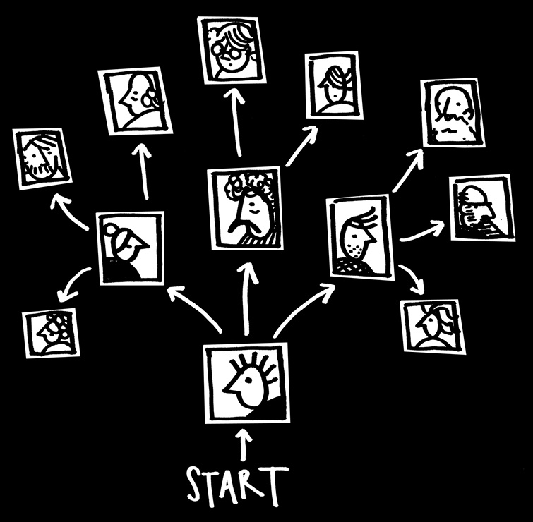
Seeing yourself as part of a creative lineage will help you feel less alone as you start making your own stuff. I hang pictures of my favorite artists in my studio. They’re like friendly ghosts. I can almost feel them pushing me forward as I’m hunched over my desk.
The great thing about dead or remote masters is that they can’t refuse you as an apprentice. You can learn whatever you want from them. They left their lesson plans in their work.
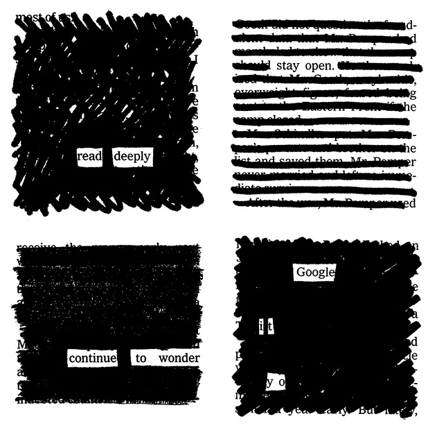
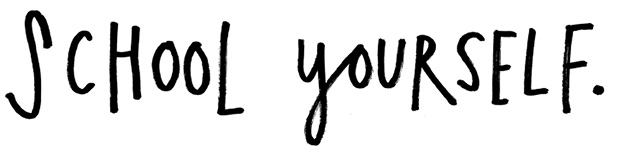
School is one thing. Education is another. The two don’t always overlap. Whether you’re in school or not, it’s always your job to get yourself an education.
You have to be curious about the world in which you live. Look things up. Chase down every reference. Go deeper than anybody else—that’s how you’ll get ahead.
Google everything. I mean everything. Google your dreams, Google your problems. Don’t ask a question before you Google it. You’ll either find the answer or you’ll come up with a better question.
Always be reading. Go to the library. There’s magic in being surrounded by books. Get lost in the stacks. Read bibliographies. It’s not the book you start with, it’s the book that book leads you to.
Collect books, even if you don’t plan on reading them right away. Filmmaker John Waters has said, “Nothing is more important than an unread library.”
Don’t worry about doing research. Just search.
“Whether I went to school or not, I would always study.”
—RZA
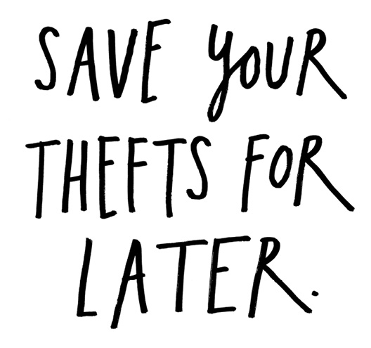
Carry a notebook and a pen with you wherever you go. Get used to pulling it out and jotting down your thoughts and observations. Copy your favorite passages out of books. Record overheard conversations. Doodle when you’re on the phone.
Go to whatever lengths necessary to make sure you always have paper on you. Artist David Hockney had all the inside pockets of his suit jackets tailored to fit a sketchbook. The musician Arthur Russell liked to wear shirts with two front pockets so he could fill them with scraps of score sheets.
Keep a swipe file. It’s just what it sounds like—a file to keep track of the stuff you’ve swiped from others. It can be digital or analog—it doesn’t matter what form it takes, as long as it works. You can keep a scrapbook and cut and paste things into it, or you can just take pictures of things with your camera phone.
See something worth stealing? Put it in the swipe file. Need a little inspiration? Open up the swipe file.
Newspaper reporters call this a “morgue file”—I like that name even better. Your morgue file is where you keep the dead things that you’ll later reanimate in your work.
“It is better to take what does not belong to you than to let it lie around neglected.”
—Mark Twain